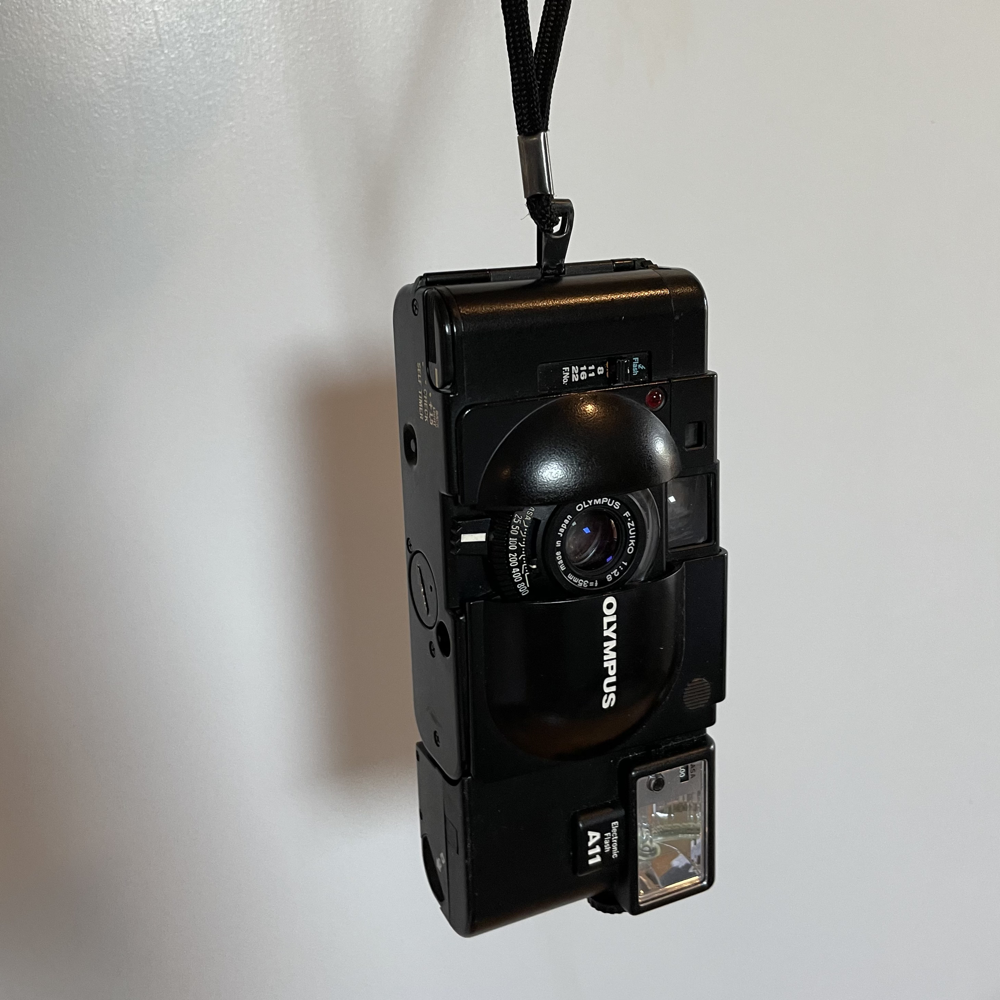
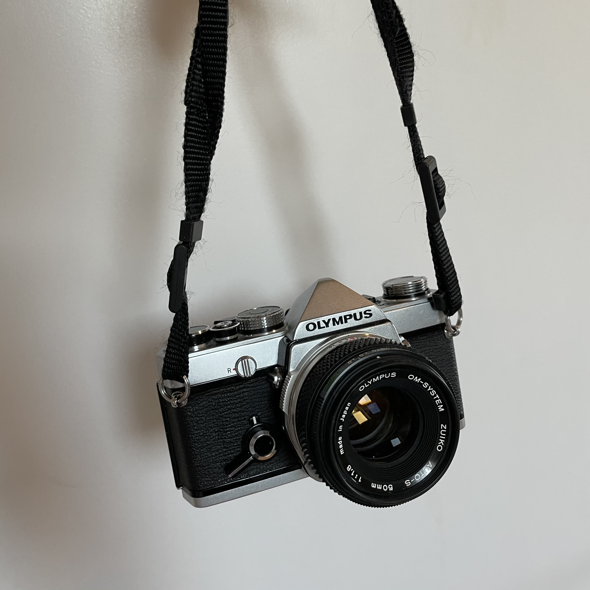

Olympus XA
This was the first film camera I decided to buy, and I did it in the name of versatility.
It's got a sharp lens and rangefinder focusing in a crazy compact design.
As it turns out, the apature priority is a bit of a bummer for the small handheld camera,
especially because the light meter doesn't indicate the correct shutter speed.
That being said, for a camera that you can bring anywhere, it can really deliver.

Olympus OM-1
After deciding I wanted to shoot an SLR, I headed to the local shop to see what used goods they had.
Among the collection was the OM-1, which I figured would make a logical pair with the XA
(both cameras were designed by Yoshihisa Maitani). The camera is a pretty traditional, yet compact, SLR.
A particularly beatiful thing about this camera is the wildly bright viewfinder, which is *almost* prittier than the photos themselves.
